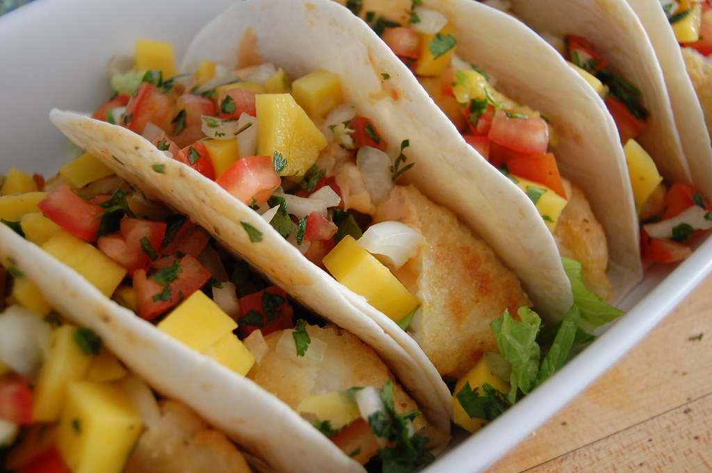

Enjoy these delicious fish tacos featuring crunchy, tender fried cod with a refreshing, tropical mango salsa. This recipe is simple to make and makes for a perfect weeknight meal!
For Mango Salsa:
- 2 cups of ripe mangoes, medium diced
- 1 whole jalapeno pepper, finely diced
- 1/4 cup of onion, finely diced
- 1/4 cup of red bell pepper, finely diced
- 1/4 cup of chopped cilantro
- juice from one lime
For Fried Fish:
- 2 lbs of Atlantic Cod filet
- 1 cup of tempura batter mix, follow package instructions
- 1 tsp of onion powder
- 1 tsp of garlic powder
- 1 tsp of paprika powder
- neutral, frying oil
- salt and pepper to taste
- For Assembly:
- 10 flour or corn tortillas
- 1 ripe sliced avocado (optional)
- fresh lime juice and extra cilantro for topping
- Dice mangoes, jalapenos, onion, bell pepper and cilantro. Cut a lime in half and set aside for juicing. Combine in a medium sized bowl and add freshly squeezed lime juice. If you would like less heat, remove seeds from jalapeno. Set aside and refrigerate.
- Pat fish dry with paper towels and prepare tempura according to package instructions. Add seasonings to batter.
- Heat oil in a skillet suitable for frying. Heat oil to 350 degrees Fahrenheit. Batter fish (about 3 - 4 pieces) and fry in oil for about 2 - 3 minutes until golden brown and crispy. Set aside on a wire rack of paper towels to drain excess oil. Sprinkle salt to taste.
- Serve with warmed tortillas and prepared mango salsa. For a roasted, charred flavor, heat tortillas directly over stove-top burner. Add sliced avocado, cojita cheese, and extra cilantro and lime juice as a topping.
Check out more yummy recipes at Home.
Original recipe credit